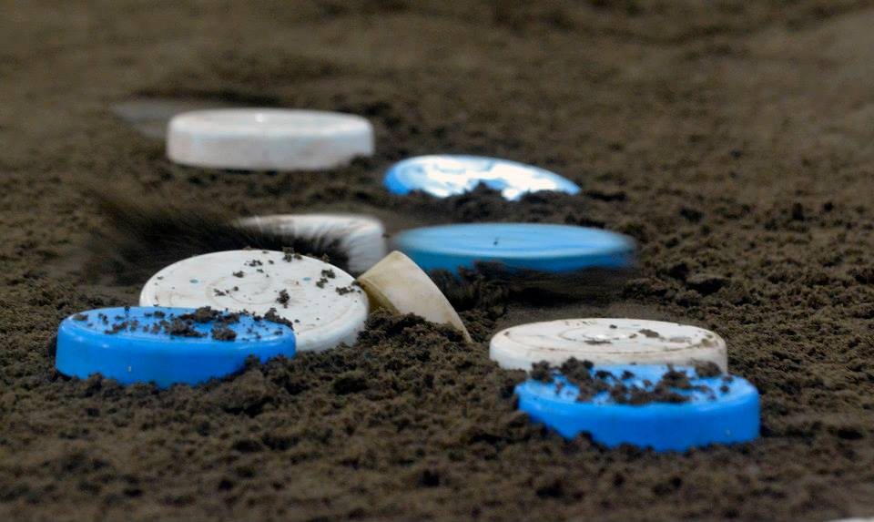
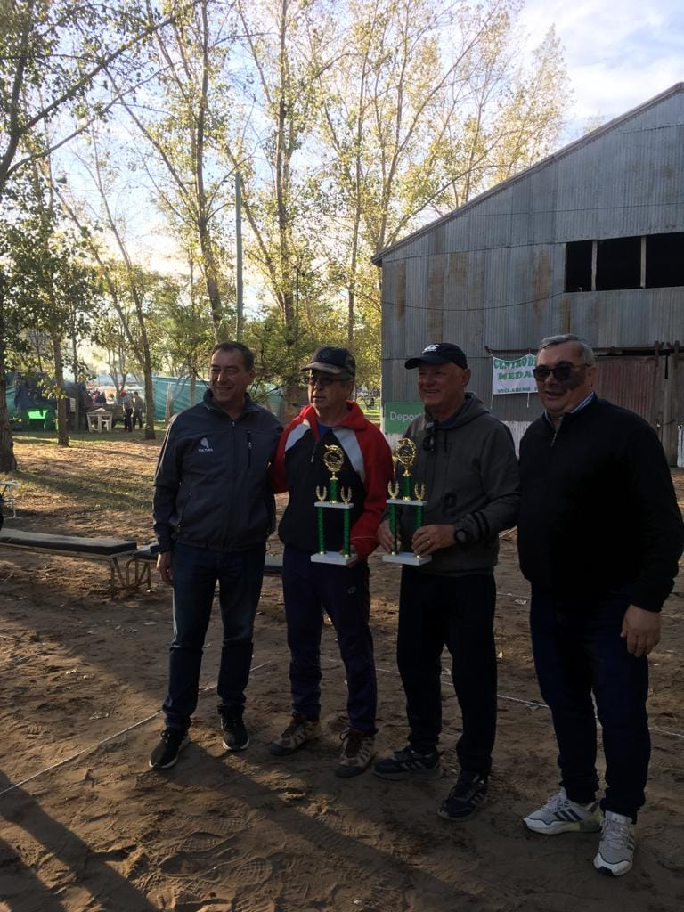
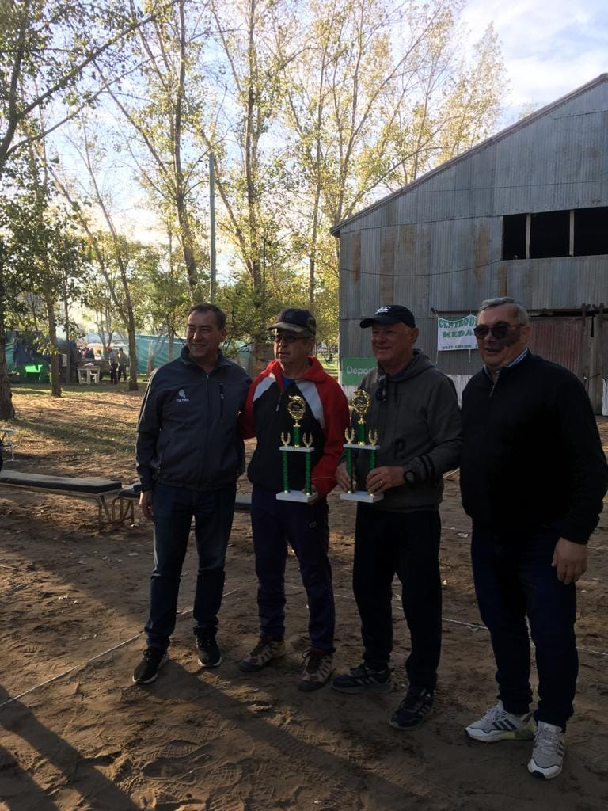
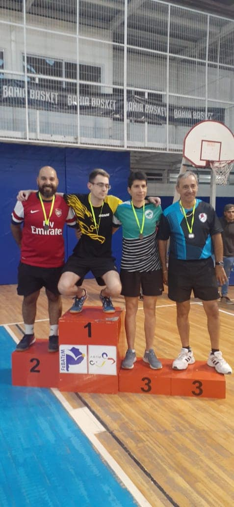
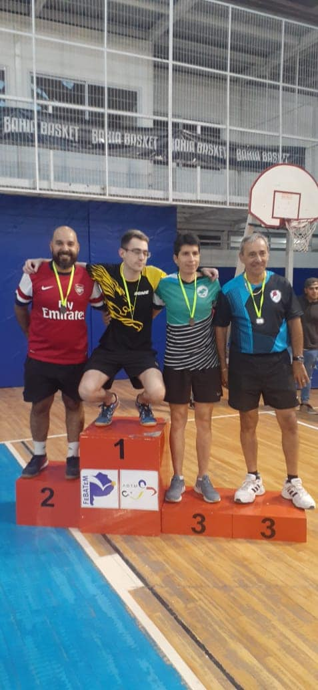

Club Deportivo Sarmiento


Nuestro Objetivo como Club
Nosotros debemos trabajar como Club en difundir la actividad, para que los jóvenes, los adultos y personas mayores vengan, es un lugar para toda la familia, no importa la edad ni el género.
No se trata solo de un lugar de actividades recreativas para personas de la tercera edad.
Cada uno de los que participan en este icónico lugar de nuestra ciudad, resaltan el bienestar físico y mental que les genera ir, jugar y sociabilizar.
Campeonatos Locales, Provinciales y Nacionales
 



 
